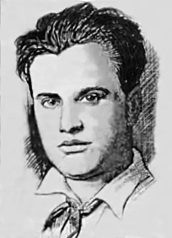

Народився 1899 р. в Острозі на Волині. Закінчив гімназію. У 1922-му приїхав до Праги. Навчаючись на філософському факультеті Празького університету, заробляв на життя, граючи на саксофоні у нічному барі. Він хворів на сухоти і лікувався у санаторії під Прагою.
У 1925 р. А. Павлюк організував літературну групу "Жовтневе коло", яке мало сентименти до СРСР, редагував альманах "Стерні". На початку 1929-го, розчарувавшись у тому, що його не визнали критики, вирішує кинути писати. А в 1932 р. виїхав до СРСР, оселився у Харкові, але після 1934-го сліди Павлюка губляться. Як і решту реемігрантів, його репресували.
А. Павлюк дуже продуктивний автор, друкувався у багатьох журналах на еміграції: "Промені", "Митуса", "Поступ", "Веселка", "Шлях", "Універсальний журнал" та в УРСР – "Нова Громада", "Глобус", "Всесвіт", "Знання", "Червоний Шлях", "Життя й Революція", "Зоря", "Студент Революції", "Західня Україна", "Плужанин", "Молодняк". У 1919 р. видав в Острозі поетичні збірки "Сумна радість", "Будуччина" і "Вінок", а в Олександрії "Акорди" (під псевдонімами Т. Блукач і М. Недоля), а відтак уже в Празі – "Життя" (1925), "Осінні вири" (1926), "Біль" (1926), "Пустеля любові", "Лірика" (1928), "Полин" (1930), "Reliquaire" (1931), "Ватра" (1931), збірку оповідань "Незнайома" (1922).